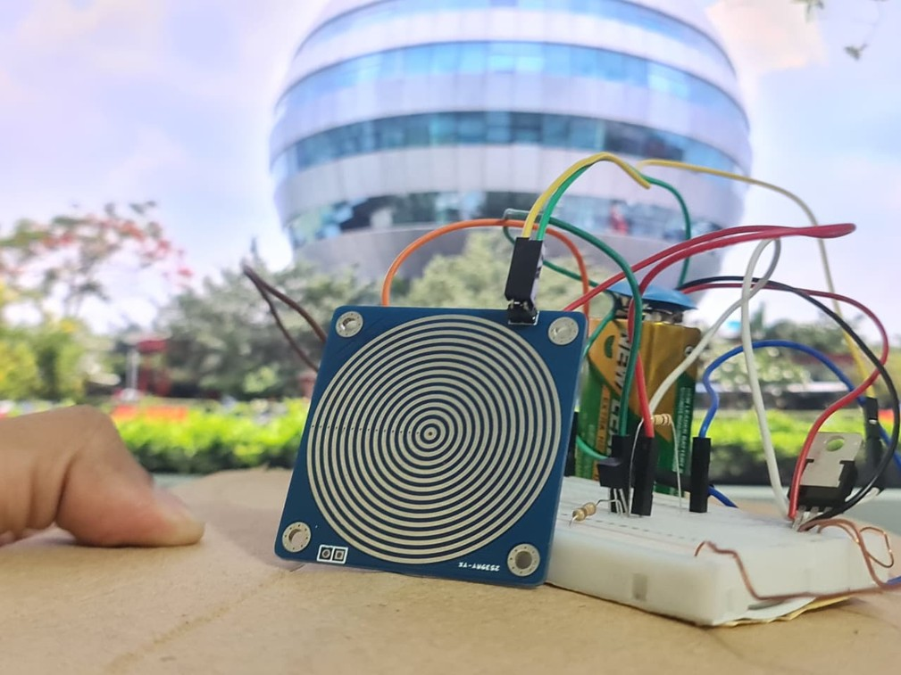

Fresh Farm Shop Management System
A desktop shop management system with secure Admin and Manager roles, inventory control, customer sales, billing, invoices, and database-backed reporting.
Filter the collection to explore my software, database, IoT, research, and electronics projects.
A desktop shop management system with secure Admin and Manager roles, inventory control, customer sales, billing, invoices, and database-backed reporting.
A Java desktop application with registration, login, menu browsing, shopping cart, promo codes, digital payments, admin price control, and token-based order confirmation.

A unified system concept for bus, train, air ticket, and hotel booking with seat availability, payment, confirmation, and service-provider dashboards. The project followed Agile Scrum.
A relational database project covering customer registration, menu products, orders, digital payments, normalization, ER design, SQL queries, and JDBC integration.

A low-cost electronic security system using a laser beam, LDR sensor, transistor, LED, and buzzer. Interrupting the beam activates the alarm.

A digital logic-based rain detection circuit using a conductive sensor plate and 555 Timer IC to activate an LED and buzzer when rain is detected.

An ESP32-based system using pH, TDS, turbidity, temperature, humidity, and gas sensors to monitor fish farming conditions with multi-layer validation for reliable readings.

Research on sustainable vertical aquaculture practices for improving fish farming productivity in Bangladesh, accepted at IEEE QPAIN 2026 with minor revisions.